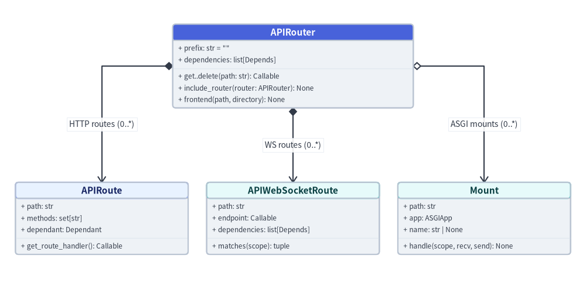

fastapi.routing
The fastapi.routing module implements modular route composition (APIRouter), Pydantic-validated HTTP path operations (APIRoute), dependency-injected WebSocket routes (APIWebSocketRoute), low-priority static frontend fallbacks (frontend()), and ASGI sub-application mounting (Mount).

classAPIRouter#
Modular router class (from fastapi import APIRouter or from fastapi.routing import APIRouter), inheriting from starlette.routing.Router. Groups related HTTP and WebSocket path operations across separate Python modules with shared prefix, tags, dependencies, responses, lifespan, and custom route_class policies before inclusion in a FastAPI app or parent APIRouter.
from fastapi import APIRouter
class APIRouter(routing.Router):
def __init__(
self,
*,
prefix: str = "",
tags: list[str | Enum] | None = None,
dependencies: Sequence[Depends] | None = None,
default_response_class: type[Response] = Default(JSONResponse),
responses: dict[int | str, dict[str, Any]] | None = None,
callbacks: list[BaseRoute] | None = None,
routes: list[BaseRoute] | None = None, # deprecated
redirect_slashes: bool = True,
default: ASGIApp | None = None,
dependency_overrides_provider: Any | None = None,
route_class: type[APIRoute] = APIRoute,
on_startup: Sequence[Callable[[], Any]] | None = None,
on_shutdown: Sequence[Callable[[], Any]] | None = None,
lifespan: Lifespan[Any] | None = None,
deprecated: bool | None = None,
include_in_schema: bool = True,
generate_unique_id_function: Callable[[APIRoute], str] = Default(generate_unique_id),
strict_content_type: bool = Default(True),
) -> None: ...
Constructor Parameters#
| Parameter | Type | Default | Description |
|---|---|---|---|
prefix |
str |
"" |
Path prefix prepended to all operations registered on this router (must start with "/" and not end with "/"). |
tags |
list[str | Enum] | None |
None |
OpenAPI tags inherited by every path operation in this router. |
dependencies |
Sequence[Depends] | None |
None |
Router-wide Depends() / Security() callables executed before every operation in this router. |
default_response_class |
type[Response] |
Default(JSONResponse) |
Default Response subclass inherited by operations on this router. |
responses |
dict[int | str, dict[str, Any]] | None |
None |
Shared OpenAPI status-code response definitions merged into every operation on this router. |
callbacks |
list[BaseRoute] | None |
None |
OpenAPI callback routes inherited by operations in this router. |
routes |
list[BaseRoute] | None |
None |
Deprecated. Starlette compatibility route list; register routes via @router.get(), etc. |
redirect_slashes |
bool |
True |
Redirects unmatched trailing-slash variants with 307 Temporary Redirect. |
default |
ASGIApp | None |
None |
Fallback ASGI handler invoked when no route matches (defaults to 404 response). |
dependency_overrides_provider |
Any | None |
None |
Internal reference to the owning FastAPI application providing dependency_overrides. |
route_class |
type[APIRoute] |
APIRoute |
Custom APIRoute subclass instantiated by add_api_route() and verb decorators on this router. |
on_startup |
Sequence[Callable[[], Any]] | None |
None |
Legacy startup hook callables; prefer lifespan. |
on_shutdown |
Sequence[Callable[[], Any]] | None |
None |
Legacy shutdown hook callables; prefer lifespan. |
lifespan |
Lifespan[Any] | None |
None |
Async or sync generator context manager automatically merged into the parent router/app lifespan on include_router(). |
deprecated |
bool | None |
None |
Marks all operations in this router as deprecated in OpenAPI when True. |
include_in_schema |
bool |
True |
Controls whether operations in this router appear in the generated OpenAPI schema. |
generate_unique_id_function |
Callable[[APIRoute], str] |
Default(generate_unique_id) |
Customizes automatic OpenAPI operationId generation for operations in this router. |
strict_content_type |
bool |
Default(True) |
Requires a JSON Content-Type header before parsing request bodies as JSON. |
Example#
from fastapi import APIRouter, FastAPI
router = APIRouter(
prefix="/orders",
tags=["orders"],
responses={404: {"description": "Order not found"}},
)
@router.get("/{order_id}")
def read_order(order_id: str) -> dict[str, str]:
return {"order_id": order_id, "status": "shipped"}
app = FastAPI()
app.include_router(router)
methodAPIRouter.get() / post() / put() / patch() / delete()#
HTTP verb decorators on APIRouter (router.get(), router.post(), router.put(), router.patch(), router.delete(), router.options(), router.head(), router.trace()). Each decorator delegates to router.add_api_route() with methods=["<VERB>"].
@router.get(
path: str,
*,
response_model: Any = Default(None),
status_code: int | None = None,
tags: list[str | Enum] | None = None,
dependencies: Sequence[Depends] | None = None,
summary: str | None = None,
description: str | None = None,
response_description: str = "Successful Response",
responses: dict[int | str, dict[str, Any]] | None = None,
deprecated: bool | None = None,
operation_id: str | None = None,
response_model_include: IncEx | None = None,
response_model_exclude: IncEx | None = None,
response_model_by_alias: bool = True,
response_model_exclude_unset: bool = False,
response_model_exclude_defaults: bool = False,
response_model_exclude_none: bool = False,
include_in_schema: bool = True,
response_class: type[Response] = Default(JSONResponse),
name: str | None = None,
callbacks: list[BaseRoute] | None = None,
openapi_extra: dict[str, Any] | None = None,
generate_unique_id_function: Callable[[APIRoute], str] = Default(generate_unique_id),
) -> Callable[[DecoratedCallable], DecoratedCallable]
Parameter Behavior#
| Aspect | Resolution Rule |
|---|---|
path |
Concatenated onto router.prefix (for example, prefix="/users" + router.get("") serves "/users"). |
tags, dependencies, callbacks |
Appended after the router's own tags, dependencies, and callbacks lists. |
responses |
Shallow-merged on top of router.responses ({**router.responses, **responses}). |
response_class, generate_unique_id_function |
Resolved via get_value_or_default(), inheriting router defaults unless explicitly overridden. |
Example#
from fastapi import APIRouter, status
router = APIRouter(prefix="/products", tags=["catalog"])
@router.get("")
def list_products() -> list[dict[str, str]]:
return [{"sku": "SKU-100"}]
@router.post("", status_code=status.HTTP_201_CREATED)
def add_product(sku: str) -> dict[str, str]:
return {"sku": sku}
methodAPIRouter.include_router()#
Nests a child APIRouter inside the current APIRouter, composing prefixes, tags, dependencies, response classes, OpenAPI responses, and lifespan contexts hierarchically while rejecting self-inclusion or cyclic router graphs.
router.include_router(
router: APIRouter,
*,
prefix: str = "",
tags: list[str | Enum] | None = None,
dependencies: Sequence[Depends] | None = None,
default_response_class: type[Response] = Default(JSONResponse),
responses: dict[int | str, dict[str, Any]] | None = None,
callbacks: list[BaseRoute] | None = None,
deprecated: bool | None = None,
include_in_schema: bool = True,
generate_unique_id_function: Callable[[APIRoute], str] = Default(generate_unique_id),
) -> None
Parameters#
| Parameter | Type | Default | Description |
|---|---|---|---|
router |
APIRouter |
(Required) | Child APIRouter to attach (cannot be self or contain self transitively). |
prefix |
str |
"" |
Additional prefix inserted between the parent router's prefix and child route paths. |
tags |
list[str | Enum] | None |
None |
Extra OpenAPI tags cascaded to all operations in the child router. |
dependencies |
Sequence[Depends] | None |
None |
Extra dependencies executed ahead of the child router's own dependencies. |
default_response_class |
type[Response] |
Default(JSONResponse) |
Fallback Response class cascaded to the child router. |
responses |
dict[int | str, dict[str, Any]] | None |
None |
Additional OpenAPI response definitions merged with child router responses. |
callbacks |
list[BaseRoute] | None |
None |
OpenAPI callbacks cascaded to child operations. |
deprecated |
bool | None |
None |
Marks all included child operations as deprecated when True. |
include_in_schema |
bool |
True |
Hides all included child operations from OpenAPI when False. |
generate_unique_id_function |
Callable[[APIRoute], str] |
Default(generate_unique_id) |
Custom operationId builder applied to child operations. |
Example#
from fastapi import APIRouter, FastAPI
v1_router = APIRouter(prefix="/v1")
billing_router = APIRouter(prefix="/billing", tags=["billing"])
@billing_router.get("/balance")
def get_balance() -> dict[str, int]:
return {"cents": 4500}
v1_router.include_router(billing_router)
app = FastAPI()
app.include_router(v1_router)
methodAPIRouter.add_api_route()#
Imperatively constructs an APIRoute (using route_class_override or self.route_class) and appends it to self.routes. All HTTP verb decorators and api_route() call this method internally.
router.add_api_route(
path: str,
endpoint: Callable[..., Any],
*,
response_model: Any = Default(None),
status_code: int | None = None,
tags: list[str | Enum] | None = None,
dependencies: Sequence[Depends] | None = None,
summary: str | None = None,
description: str | None = None,
response_description: str = "Successful Response",
responses: dict[int | str, dict[str, Any]] | None = None,
deprecated: bool | None = None,
methods: set[str] | list[str] | None = None,
operation_id: str | None = None,
response_model_include: IncEx | None = None,
response_model_exclude: IncEx | None = None,
response_model_by_alias: bool = True,
response_model_exclude_unset: bool = False,
response_model_exclude_defaults: bool = False,
response_model_exclude_none: bool = False,
include_in_schema: bool = True,
response_class: type[Response] | DefaultPlaceholder = Default(JSONResponse),
name: str | None = None,
route_class_override: type[APIRoute] | None = None,
callbacks: list[BaseRoute] | None = None,
openapi_extra: dict[str, Any] | None = None,
generate_unique_id_function: Callable[[APIRoute], str] | DefaultPlaceholder = Default(generate_unique_id),
strict_content_type: bool | DefaultPlaceholder = Default(True),
) -> None
Unique Parameters#
| Parameter | Type | Default | Description |
|---|---|---|---|
endpoint |
Callable[..., Any] |
(Required) | Sync, async, generator, or async-generator endpoint callable. |
methods |
set[str] | list[str] | None |
None |
HTTP verbs accepted by the route (defaults to {"GET"} when None). |
route_class_override |
type[APIRoute] | None |
None |
Per-route APIRoute subclass override bypassing self.route_class. |
strict_content_type |
bool | DefaultPlaceholder |
Default(True) |
Per-route override for strict JSON Content-Type header enforcement. |
Example#
from fastapi import APIRouter
def check_liveness() -> dict[str, bool]:
return {"live": True}
router = APIRouter()
router.add_api_route("/livez", check_liveness, methods=["GET"], tags=["ops"])
methodAPIRouter.api_route()#
Decorator wrapper around APIRouter.add_api_route() for binding a single endpoint callable to multiple HTTP methods on a router.
router.api_route(
path: str,
*,
response_model: Any = Default(None),
status_code: int | None = None,
tags: list[str | Enum] | None = None,
dependencies: Sequence[Depends] | None = None,
summary: str | None = None,
description: str | None = None,
response_description: str = "Successful Response",
responses: dict[int | str, dict[str, Any]] | None = None,
deprecated: bool | None = None,
methods: list[str] | None = None,
operation_id: str | None = None,
response_model_include: IncEx | None = None,
response_model_exclude: IncEx | None = None,
response_model_by_alias: bool = True,
response_model_exclude_unset: bool = False,
response_model_exclude_defaults: bool = False,
response_model_exclude_none: bool = False,
include_in_schema: bool = True,
response_class: type[Response] = Default(JSONResponse),
name: str | None = None,
callbacks: list[BaseRoute] | None = None,
openapi_extra: dict[str, Any] | None = None,
generate_unique_id_function: Callable[[APIRoute], str] = Default(generate_unique_id),
) -> Callable[[DecoratedCallable], DecoratedCallable]
Key Parameters#
| Parameter | Type | Default | Description |
|---|---|---|---|
path |
str |
(Required) | Route path relative to router.prefix. |
methods |
list[str] | None |
None |
List of HTTP verbs (such as ["GET", "POST"]) handled by the decorated callable. |
Example#
from fastapi import APIRouter, Request
router = APIRouter()
@router.api_route("/webhook", methods=["POST", "PUT"])
async def receive_webhook(request: Request) -> dict[str, str]:
return {"verb": request.method}
methodAPIRouter.websocket()#
Decorator registering an APIWebSocketRoute on the router while inheriting router.prefix and router.dependencies. Imperative counterpart: router.add_api_websocket_route(path, endpoint, name=None, *, dependencies=None).
router.websocket(
path: str,
name: str | None = None,
*,
dependencies: Sequence[Depends] | None = None,
) -> Callable[[DecoratedCallable], DecoratedCallable]
Parameters#
| Parameter | Type | Default | Description |
|---|---|---|---|
path |
str |
(Required) | WebSocket path appended to router.prefix. |
name |
str | None |
None |
Internal route lookup name. |
dependencies |
Sequence[Depends] | None |
None |
Route-specific Depends() / Security() callables combined with router.dependencies. |
Example#
from fastapi import APIRouter, WebSocket
ws_router = APIRouter(prefix="/realtime")
@ws_router.websocket("/events")
async def stream_events(websocket: WebSocket) -> None:
await websocket.accept()
await websocket.send_json({"type": "connected"})
await websocket.close()
methodAPIRouter.frontend()#
Registers a static frontend asset directory on an APIRouter as low-priority fallback routes that inherit the router's prefix and dependencies.
router.frontend(
path: str,
*,
directory: str | os.PathLike[str],
fallback: Literal["auto", "index.html", "404.html"] | None = "auto",
check_dir: bool | Literal["auto"] = "auto",
) -> None
Parameters#
| Parameter | Type | Default | Description |
|---|---|---|---|
path |
str |
(Required) | Sub-path under router.prefix serving the static frontend build. |
directory |
str | os.PathLike[str] |
(Required) | Directory containing compiled HTML/JS/CSS assets. |
fallback |
Literal["auto", "index.html", "404.html"] | None |
"auto" |
Missing-route SPA fallback policy ("auto", "index.html", "404.html", or None). |
check_dir |
bool | Literal["auto"] |
"auto" |
Validates directory existence at registration time unless running in FASTAPI_ENV="development". |
Example#
from pathlib import Path
import tempfile
from fastapi import APIRouter, FastAPI
ui_router = APIRouter(prefix="/portal")
with tempfile.TemporaryDirectory() as build_dir:
(Path(build_dir) / "index.html").write_text("<h1>Portal</h1>", encoding="utf-8")
ui_router.frontend("/", directory=build_dir, fallback="index.html")
app = FastAPI()
app.include_router(ui_router)
classAPIRoute#
FastAPI's HTTP route representation (from fastapi.routing import APIRoute), subclassing starlette.routing.Route. Inspects endpoint type annotations at registration time to build a Dependant dependency graph, Pydantic request body_field and response_field adapters, JSONL/SSE generator streaming flags, and a compiled OpenAPI unique_id.
from fastapi.routing import APIRoute
class APIRoute(routing.Route):
def __init__(
self,
path: str,
endpoint: Callable[..., Any],
*,
response_model: Any = Default(None),
status_code: int | None = None,
tags: list[str | Enum] | None = None,
dependencies: Sequence[Depends] | None = None,
summary: str | None = None,
description: str | None = None,
response_description: str = "Successful Response",
responses: dict[int | str, dict[str, Any]] | None = None,
deprecated: bool | None = None,
name: str | None = None,
methods: set[str] | list[str] | None = None,
operation_id: str | None = None,
response_model_include: IncEx | None = None,
response_model_exclude: IncEx | None = None,
response_model_by_alias: bool = True,
response_model_exclude_unset: bool = False,
response_model_exclude_defaults: bool = False,
response_model_exclude_none: bool = False,
include_in_schema: bool = True,
response_class: type[Response] | DefaultPlaceholder = Default(JSONResponse),
dependency_overrides_provider: Any | None = None,
callbacks: list[BaseRoute] | None = None,
openapi_extra: dict[str, Any] | None = None,
generate_unique_id_function: Callable[[APIRoute], str] | DefaultPlaceholder = Default(generate_unique_id),
strict_content_type: bool | DefaultPlaceholder = Default(True),
) -> None: ...
Key Introspection Attributes#
| Attribute | Type | Description |
|---|---|---|
path / path_format |
str |
Raw and normalized URL path template (e.g., "/items/{item_id}"). |
methods |
set[str] |
Uppercase HTTP methods served by the route (e.g., {"GET"}). |
unique_id |
str |
Resolved OpenAPI operationId (operation_id or generate_unique_id_function(self)). |
dependant |
Dependant |
Parsed dependency tree containing path, query, header, cookie, body, and sub-dependency nodes. |
body_field / response_field |
ModelField | None |
Compiled Pydantic v2 validation/serialization adapters for request and response payloads. |
is_sse_stream / is_json_stream |
bool |
Flags set automatically when endpoint is a generator paired with EventSourceResponse or default JSONL streaming. |
Example#
from fastapi import FastAPI
from fastapi.routing import APIRoute
app = FastAPI()
@app.get("/users/{user_id}", tags=["users"])
def get_user(user_id: int) -> dict[str, int]:
return {"user_id": user_id}
api_routes = [r for r in app.routes if isinstance(r, APIRoute)]
assert api_routes[0].path_format == "/users/{user_id}"
assert api_routes[0].methods == {"GET"}
methodAPIRoute.get_route_handler()#
Returns the async Callable[[Request], Coroutine[Any, Any, Response]] handler responsible for parsing request bodies, solving dependencies, running the endpoint, and serializing responses. Subclass APIRoute and override get_route_handler() to wrap Request or Response objects with route-scoped instrumentation, body decompression, or structured error logging.
route.get_route_handler() -> Callable[[Request], Coroutine[Any, Any, Response]]
Behavior#
| Aspect | Details |
|---|---|
| Return type | Callable[[Request], Coroutine[Any, Any, Response]] |
| Customization hook | Pass your APIRoute subclass via APIRouter(route_class=CustomRoute) or add_api_route(..., route_class_override=CustomRoute). |
Example#
from collections.abc import Callable, Coroutine
import time
from typing import Any
from fastapi import APIRouter, FastAPI, Request, Response
from fastapi.routing import APIRoute
class TimedRoute(APIRoute):
def get_route_handler(self) -> Callable[[Request], Coroutine[Any, Any, Response]]:
original_handler = super().get_route_handler()
async def custom_handler(request: Request) -> Response:
start = time.perf_counter()
response = await original_handler(request)
response.headers["X-Route-Duration"] = f"{time.perf_counter() - start:.5f}"
return response
return custom_handler
router = APIRouter(route_class=TimedRoute)
@router.get("/timed")
async def timed_endpoint() -> dict[str, str]:
return {"timed": "yes"}
app = FastAPI()
app.include_router(router)
classAPIWebSocketRoute#
WebSocket route class (from fastapi.routing import APIWebSocketRoute), subclassing starlette.routing.WebSocketRoute. Compiles path parameters and builds a FastAPI Dependant tree so WebSocket endpoints receive validated parameters, Depends()/Security() dependencies, and structured WebSocketRequestValidationError handling.
from fastapi.routing import APIWebSocketRoute
class APIWebSocketRoute(routing.WebSocketRoute):
def __init__(
self,
path: str,
endpoint: Callable[..., Any],
*,
name: str | None = None,
dependencies: Sequence[Depends] | None = None,
dependency_overrides_provider: Any | None = None,
) -> None: ...
Parameters#
| Parameter | Type | Default | Description |
|---|---|---|---|
path |
str |
(Required) | WebSocket URL path template. |
endpoint |
Callable[..., Any] |
(Required) | Async WebSocket coroutine accepting WebSocket and any declared parameters/dependencies. |
name |
str | None |
None |
Route identifier (defaults to get_name(endpoint)). |
dependencies |
Sequence[Depends] | None |
None |
Parameterless Depends() / Security() guards executed when opening the session. |
dependency_overrides_provider |
Any | None |
None |
Reference to the FastAPI instance supplying dependency_overrides. |
Example#
from fastapi import FastAPI, WebSocket
from fastapi.routing import APIWebSocketRoute
async def ticker_ws(websocket: WebSocket) -> None:
await websocket.accept()
await websocket.send_text("BTC:100000")
await websocket.close()
ws_route = APIWebSocketRoute("/ws/ticker", ticker_ws, name="ticker")
app = FastAPI()
app.router.routes.append(ws_route)
classMount#
Sub-application and nested route mount class re-exported at fastapi.routing.Mount from starlette.routing.Mount. Matches a URL prefix (path), updates ASGI root_path, and delegates the remaining path segment to a child ASGIApp or sequence of BaseRoute objects with optional mount-scoped middleware and max_body_size.
from fastapi.routing import Mount
class Mount(BaseRoute):
def __init__(
self,
path: str,
app: ASGIApp | None = None,
routes: Sequence[BaseRoute] | None = None,
name: str | None = None,
*,
middleware: Sequence[Middleware] | None = None,
max_body_size: int | None = None,
) -> None: ...
Parameters#
| Parameter | Type | Default | Description |
|---|---|---|---|
path |
str |
(Required) | URL prefix ("" or starting with "/"; trailing slash is normalized automatically). |
app |
ASGIApp | None |
None |
Target ASGI 3.0 application (app or routes must be provided). |
routes |
Sequence[BaseRoute] | None |
None |
Alternative route list wrapped in a Starlette Router when app is None. |
name |
str | None |
None |
Mount name enabling url_path_for("<mount_name>:<route_name>") reverse lookups. |
middleware |
Sequence[Middleware] | None |
None |
Middleware list applied exclusively to traffic entering this Mount. |
max_body_size |
int | None |
None |
Optional byte limit enforced via Starlette's RequestBodyLimitMiddleware on this mount. |
Example#
from fastapi import FastAPI
from fastapi.responses import PlainTextResponse
from fastapi.routing import Mount
from starlette.routing import Route
def legacy_status(request: object) -> PlainTextResponse:
return PlainTextResponse("OK")
app = FastAPI()
app.router.routes.append(
Mount("/legacy", routes=[Route("/status", legacy_status)], name="legacy")
)